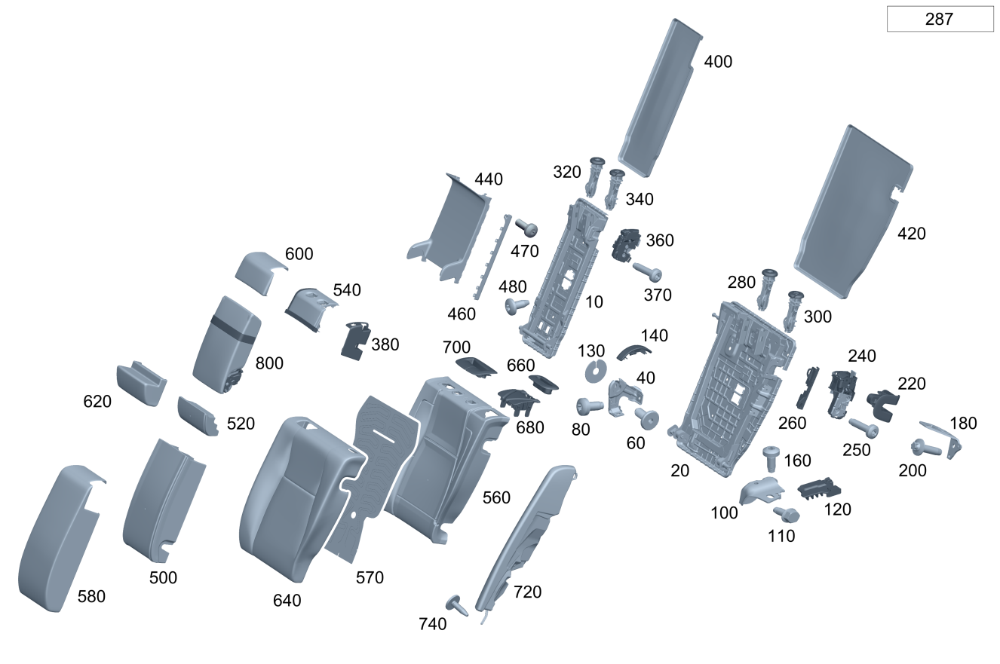

| № | Артикул | Название | Кол. | Примечание | Ограничение |
|---|---|---|---|---|---|
| 10 | A 000 920 37 00 | Рама спинки сиденья (SEAT BACKREST FRAME) | 1 | Спинка заднего сиденья посередине | 287 |
| 20 | A 000 920 24 00 | Рама спинки сиденья (SEAT BACKREST FRAME) | 1 | Спинка заднего сиденья слева [414] СТАРУЮ ДЕТАЛЬ УСТАНАВЛИВАТЬ БОЛЬШЕ НЕ РАЗРЕШАЕТСЯ | 287 |
| 20 | A 000 920 47 02 | Рама спинки сиденья (SEAT BACKREST FRAME) | 1 | Спинка заднего сиденья слева | 287 |
| 20 | A 000 920 30 00 | Подушка сиденья (SEAT CUSHION) | 1 | Спинка заднего сиденья справа [414] СТАРУЮ ДЕТАЛЬ УСТАНАВЛИВАТЬ БОЛЬШЕ НЕ РАЗРЕШАЕТСЯ | 287 |
| 20 | A 000 920 50 02 | Рама спинки сиденья (SEAT BACKREST FRAME) | 1 | Спинка заднего сиденья справа | 287 |
| 40 | A 000 920 48 00 | Поворотная опора (PIVOT BEARING) | 1 | Посередине слева | 287 |
| 40 | A 000 920 71 00 | Поворотная опора (PIVOT BEARING) | 1 | Посередине справа | 287 |
| 60 | A 000 973 16 00 | Опорная ось (BEARING AXLE) | 2 | Спинка заднего сиденья посередине | 287 |
| 80 | N 000000 001434 | Винт с 6-гр. глвк (HEXALOBULAR SCREW) | 2 | Болт опоры слева \- подлокотник / вещевое отделение в задней части салона; M10X20 | 287 |
| 80 | N 000000 001434 | Винт с 6-гр. глвк (HEXALOBULAR SCREW) | 2 | Болт опоры справа \- подлокотник / вещевое отделение в задней части салона; M10X20 | 287 |
| 100 | A 000 920 42 00 | Поворотная опора (PIVOT BEARING) | 1 | Слева снаружи снизу | 287 |
| 100 | A 000 920 45 00 | Поворотная опора (PIVOT BEARING) | 1 | Справа снаружи снизу | 287 |
| 110 | N 910105 010009 | Винт с 6-гранной головкой (HEXAGON HEAD BOLT) | 1 | Поворотная опора к спинке заднего сиденья (левая сторона); M10X25 | 287 |
| 110 | N 910105 010009 | Винт с 6-гранной головкой (HEXAGON HEAD BOLT) | 1 | Поворотная опора к спинке заднего сиденья (правая сторона); M10X25 | 287 |
| 120 | A 206 929 01 00 | Крепежная пластина (MOUNTING PLATE) | 1 | Спинка заднего сиденья слева [402] БОЛЬШЕ НЕ ПОСТАВЛЯЕТСЯ | (7U1/7U2/7U3)+287 |
| 120 | A 206 929 01 00 | Крепежная пластина (MOUNTING PLATE) | 1 | Спинка заднего сиденья слева [402] БОЛЬШЕ НЕ ПОСТАВЛЯЕТСЯ | (7U1/7U2/7U3/555)+287 |
| 120 | A 206 929 02 00 | Крепежная пластина (MOUNTING PLATE) | 1 | Спинка заднего сиденья справа [402] БОЛЬШЕ НЕ ПОСТАВЛЯЕТСЯ | (7U1/7U2/7U3)+287 |
| 120 | A 206 929 02 00 | Крепежная пластина (MOUNTING PLATE) | 1 | Спинка заднего сиденья справа [402] БОЛЬШЕ НЕ ПОСТАВЛЯЕТСЯ | (7U1/7U2/7U3/555)+287 |
| 130 | A 206 923 17 00 | Проставочная пластина (SPACER PLATE) | 1 | Слева снизу | 287 |
| 130 | A 206 923 17 00 | Проставочная пластина (SPACER PLATE) | 1 | Справа снизу | 287 |
| 140 | A 206 921 00 00 | Накладка каркаса сиденья (COVER, SEAT FRAME BASE) | 2 | Кожух поворотной опоры | 287 |
| 140 | A 206 921 01 00 | Накладка каркаса сиденья (COVER, SEAT FRAME BASE) | 2 | Кожух поворотной опоры | 287 |
| 160 | N 000000 001434 | Винт с 6-гр. глвк (HEXALOBULAR SCREW) | 1 | Спинка заднего сиденья (левая сторона) к кузову; M10X20 | 287 |
| 160 | N 000000 001434 | Винт с 6-гр. глвк (HEXALOBULAR SCREW) | 1 | Спинка заднего сиденья (правая сторона) к кузову; M10X20 | 287 |
| 180 | A 000 920 66 00 | Крепежная скоба (MOUNTING BRACKET) | 1 | Слева снаружи сверху | 287 |
| 180 | A 000 920 80 00 | Крепежная скоба (MOUNTING BRACKET) | 1 | Справа снаружи сверху | 287 |
| 200 | A 000 990 17 27 | Самонарезающий винт (SELF-TAPPING SCREW) | 1 | Крепёжная скоба (левая) к кузову | 287 |
| 200 | N 000000 001157 | Винт с 6-гр. глвк (HEXALOBULAR SCREW) | 1 | Крепёжная скоба (левая) к кузову; M10X30 | 287 |
| 200 | A 000 990 17 27 | Самонарезающий винт (SELF-TAPPING SCREW) | 1 | Крепёжная скоба (правая) к кузову | 287 |
| 200 | N 000000 001157 | Винт с 6-гр. глвк (HEXALOBULAR SCREW) | 1 | Крепёжная скоба (правая) к кузову; M10X30 | 287 |
| 220 | A 206 923 13 00 | Облицовка рамы спинки (COVER, BACKREST FRAME) | 1 | Замок слева | 287 |
| 220 | A 206 923 20 00 | Облицовка рамы спинки (COVER, BACKREST FRAME) | 1 | Замок слева | 287 |
| 220 | A 206 923 14 00 | Облицовка рамы спинки (COVER, BACKREST FRAME) | 1 | Замок справа | 287 |
| 220 | A 206 923 21 00 | Облицовка рамы спинки (COVER, BACKREST FRAME) | 1 | Замок справа | 287 |
| 240 | A 000 920 76 01 | Заднее сиденье (REAR SEAT) | 1 | Блокирующее устройство спинки слева | 287 |
| 240 | A 000 920 75 01 | Подушка сиденья (SEAT CUSHION) | 1 | Блокирующее устройство спинки справа | 287 |
| 250 | N 000000 004321 | Винт с 6-гр. глвк (HEXALOBULAR SCREW) | 2 | Замок слева; M8X30 | 287 |
| 250 | N 000000 004321 | Винт с 6-гр. глвк (HEXALOBULAR SCREW) | 2 | Замок справа; M8X30 | 287 |
| 260 | A 206 920 41 02 | Удерживающая пластина (RETAINING PLATE) | 1 | Спинка заднего сиденья слева | (7U2/7U3/555)+287 |
| 260 | A 206 920 42 02 | Удерживающая пластина (RETAINING PLATE) | 1 | Спинка заднего сиденья справа | (7U2/7U3/555)+287 |
| 280 | A 206 970 23 00 | Направляющая подголовника | 1 | Слева сзади, изнутри | 287 |
| 280 | A 206 970 23 00 | Направляющая подголовника | 1 | Справа сзади, изнутри | 287 |
| 300 | A 206 970 22 00 | Направляющая подголовника | 1 | Лев. задн. (внешн.) | 287 |
| 300 | A 206 970 22 00 | Направляющая подголовника | 1 | Прав. задн. (внешн.) | 287 |
| 320 | A 206 970 23 00 | Направляющая подголовника | 1 | Посередине справа | 287 |
| 340 | A 206 970 22 00 | Направляющая подголовника | 1 | Посередине слева | 287 |
| 360 | A 000 920 91 00 | Блокировка спинки сиденья (BACKREST LOCKING FUNCTION) | 1 | Спинка заднего сиденья посередине | 287 |
| 370 | N 000000 004321 | Винт с 6-гр. глвк (HEXALOBULAR SCREW) | 2 | Блокировка посередине; M8X30 | 287 |
| 380 | A 206 923 03 00 | Накладка ручки | 1 | Спинка заднего сиденья посередине | 287 |
| 400 | A 206 924 02 00 | Обивка спинки сиденья | 1 | Спинка заднего сиденья посередине | 287 |
| 420 | A 206 924 00 00 | Обивка спинки сиденья | 1 | Спинка заднего сиденья слева | 287 |
| 420 | A 206 924 04 00 | Обивка спинки сиденья (LINING, RR SEAT BACKREST) | 1 | Спинка заднего сиденья справа | 287 |
| 440 | A 206 973 00 00 | Накладка подлокотника (COVER, ARMREST) | 1 | Спинка заднего сиденья посередине | (7U2/7U3/555)+287 |
| 460 | A 206 973 05 00 | Накладка подлокотника (COVER, ARMREST) | 1 | Посередине сзади слева | (7U2/7U3/555)+287 |
| 460 | A 206 973 06 00 | Накладка подлокотника (COVER, ARMREST) | 1 | Посередине сзади справа | (7U2/7U3/555)+287 |
| 470 | A 001 984 56 29 | Болт с головкой торкс (HEXALOBULAR BOLT) | 2 | Накладка (левая и правая) на раме спинки; 4X12 | (7U2/7U3/555)+287 |
| 480 | A 001 984 43 29 | Винт Torx с полукр. гол. (PAN HEAD SCREW) | 2 | Подлокотник к раме спинки; M6X14 | (7U2/7U3/555)+287 |
| 500 | A 206 920 05 01 | Накладка спинки сиденья (PADDING, RR SEAT BACKREST) | 1 | Спинка заднего сиденья посередине | 7U1+287 |
| 520 | A 206 920 69 00 | Накладка спинки сиденья (PADDING, RR SEAT BACKREST) | 1 | Спинка заднего сиденья посередине | (7U2/7U3/555)+287 |
| 540 | A 206 920 26 01 | Облицовка рамы спинки (COVER, BACKREST FRAME) | 1 | Накладка спинки заднего сиденья (верхняя) | (7U2/7U3/555)+287 |
| 540 | A 206 920 88 01 | Облицовка рамы спинки (COVER, BACKREST FRAME) | 1 | Накладка спинки заднего сиденья (верхняя) | 7U1+287 |
| 540 | A 206 920 88 01 | Облицовка рамы спинки (COVER, BACKREST FRAME) | 1 | Накладка спинки заднего сиденья (верхняя) | 7U1+287 |
| 560 | A 206 920 51 00 | Накладка спинки сиденья (PADDING, RR SEAT BACKREST) | 1 | Спинка заднего сиденья слева | 7U1+287 |
| 560 | A 206 920 52 00 | Накладка спинки сиденья (PADDING, RR SEAT BACKREST) | 1 | Спинка заднего сиденья слева | (7U2/7U3/555)+287 |
| 560 | A 206 920 51 00 | Накладка спинки сиденья (PADDING, RR SEAT BACKREST) | 1 | Спинка заднего сиденья слева | 7U1+287 |
| 560 | A 206 920 21 00 | Накладка спинки сиденья (PADDING, RR SEAT BACKREST) | 1 | Спинка заднего сиденья справа | 7U1+287 |
| 560 | A 206 920 22 00 | Накладка спинки сиденья (PADDING, RR SEAT BACKREST) | 1 | Спинка заднего сиденья справа | (7U2/7U3/555)+287 |
| 560 | A 206 920 21 00 | Накладка спинки сиденья (PADDING, RR SEAT BACKREST) | 1 | Спинка заднего сиденья справа | 7U1+287 |
| 570 | A 206 906 95 02 | Подогрев сидений (SEAT HEATING) | 1 | Спинка заднего сиденья слева | (7U2/7U3/555)+872+287 |
| 570 | A 206 906 95 02 | Подогрев сидений (SEAT HEATING) | 1 | Спинка заднего сиденья справа | (7U2/7U3/555)+872+287 |
| 580 | A 206 920 06 01 | Обивка спинки сиденья (OUTER COV., RR SEAT BACKR) | 1 | Спинка заднего сиденья посередине | 7U1+000A+287 |
| 600 | A 206 920 73 00 | Обивка спинки сиденья | 1 | Чехол обивки спинки заднего сиденья (верхняя сторона) | (7U2/7U3)+(100A/300A)+287 |
| 600 | A 206 920 79 03 | Обивка спинки сиденья | 1 | Чехол обивки спинки заднего сиденья (верхняя сторона) | (7U2/7U3)+(100A/300A)+287+(807/808) |
| 600 | A 206 920 75 00 | Обивка спинки сиденья (OUTER COV., RR SEAT BACKR) | 1 | Чехол обивки спинки заднего сиденья (верхняя сторона) | (7U2/7U3/555)+(200A/250A)+287 |
| 600 | A 206 920 83 03 | Обивка спинки сиденья | 1 | Чехол обивки спинки заднего сиденья (верхняя сторона) | (7U2/7U3/555)+(200A/250A)+287+(807/808) |
| 600 | A 206 920 69 01 | Обивка спинки сиденья (OUTER COV., RR SEAT BACKR) | 1 | Чехол обивки спинки заднего сиденья (верхняя сторона) | (7U3/555)+(600A/650A)+287 |
| 600 | A 206 920 41 01 | Обивка спинки сиденья (OUTER COV., RR SEAT BACKR) | 1 | Чехол обивки спинки заднего сиденья (верхняя сторона) | (7U3/555)+(800A/850A/870A)+287 |
| 600 | A 206 920 82 03 | Обивка спинки сиденья | 1 | Чехол обивки спинки заднего сиденья (верхняя сторона) | (7U3/555)+(800A/850A/870A)+287+(807/808) |
| 620 | A 206 920 74 00 | Обивка спинки сиденья | 1 | Чехол обивки спинки заднего сиденья (нижняя сторона) | (7U2/7U3)+(100A/300A)+287 |
| 620 | A 206 920 84 03 | Обивка спинки сиденья | 1 | Чехол обивки спинки заднего сиденья (нижняя сторона) | (7U2/7U3)+(100A/300A)+287+(807/808) |
| 620 | A 206 920 76 00 | Обивка спинки сиденья (OUTER COV., RR SEAT BACKR) | 1 | Чехол обивки спинки заднего сиденья (нижняя сторона) | (7U2/7U3/555)+(200A/250A)+287 |
| 620 | A 206 920 85 03 | Обивка спинки сиденья | 1 | Чехол обивки спинки заднего сиденья (нижняя сторона) | (7U2/7U3/555)+(200A/250A)+287+(807/808) |
| 620 | A 206 920 70 01 | Обивка спинки сиденья (OUTER COV., RR SEAT BACKR) | 1 | Чехол обивки спинки заднего сиденья (нижняя сторона) | (7U3/555)+(600A/650A)+287 |
| 620 | A 206 920 42 01 | Обивка спинки сиденья | 1 | Чехол обивки спинки заднего сиденья (нижняя сторона) | (7U3/555)+(800A/850A/870A)+287 |
| 620 | A 206 920 86 03 | Обивка спинки сиденья | 1 | Чехол обивки спинки заднего сиденья (нижняя сторона) | (7U3/555)+(800A/850A/870A)+287+(807/808) |
| 640 | A 206 920 41 00 | Обивка спинки сиденья (OUTER COV., RR SEAT BACKR) | 1 | Спинка заднего сиденья слева | 7U1+000A+287 |
| 640 | A 206 920 45 00 | Обивка спинки сиденья (OUTER COV., RR SEAT BACKR) | 1 | Спинка заднего сиденья слева | 7U2+100A+287 |
| 640 | A 206 920 41 03 | Обивка спинки сиденья | 1 | Спинка заднего сиденья слева | 7U2+100A+287+(807/808) |
| 640 | A 206 920 47 00 | Обивка спинки сиденья (OUTER COV., RR SEAT BACKR) | 1 | Спинка заднего сиденья слева | 7U2+200A+287 |
| 640 | A 206 920 47 03 | Обивка спинки сиденья | 1 | Спинка заднего сиденья слева | 7U2+200A+287+(807/808) |
| 640 | A 206 920 31 01 | Обивка спинки сиденья (OUTER COV., RR SEAT BACKR) | 1 | Спинка заднего сиденья слева | 7U2+300A+287 |
| 640 | A 206 920 35 03 | Обивка спинки сиденья | 1 | Спинка заднего сиденья слева | 7U2+300A+287+(807/808) |
| 640 | A 206 920 35 01 | Обивка спинки сиденья (OUTER COV., RR SEAT BACKR) | 1 | Спинка заднего сиденья слева | 7U3+100A+287 |
| 640 | A 206 920 59 03 | Обивка спинки сиденья | 1 | Спинка заднего сиденья слева | 7U3+100A+287+(807/808) |
| 640 | A 206 920 37 01 | Обивка спинки сиденья (OUTER COV., RR SEAT BACKR) | 1 | Спинка заднего сиденья слева | 7U3+200A+287 |
| 640 | A 206 920 64 03 | Обивка спинки сиденья | 1 | Спинка заднего сиденья слева | 7U3+200A+287+(807/808) |
| 640 | A 206 920 33 01 | Обивка спинки сиденья (OUTER COV., RR SEAT BACKR) | 1 | Спинка заднего сиденья слева | 7U3+600A+287 |
| 640 | A 206 920 81 02 | Обивка спинки сиденья | 1 | Спинка заднего сиденья слева | 7U3+600A+287+(804+054/805/806) |
| 640 | A 206 920 81 02 | Обивка спинки сиденья | 1 | Спинка заднего сиденья слева | 7U3+600A+287 |
| 640 | A 206 920 33 01 | Обивка спинки сиденья (OUTER COV., RR SEAT BACKR) | 1 | Спинка заднего сиденья слева | 7U3+600A+287+165 |
| 640 | A 206 920 81 02 | Обивка спинки сиденья | 1 | Спинка заднего сиденья слева | 7U3+600A+287+165 |
| 640 | A 206 920 39 01 | Обивка спинки сиденья (OUTER COV., RR SEAT BACKR) | 1 | Спинка заднего сиденья слева | 7U3+800A+287 |
| 640 | A 206 920 71 03 | Обивка спинки сиденья | 1 | Спинка заднего сиденья слева | 7U3+800A+287+(807/808) |
| 640 | A 206 920 21 02 | Обивка спинки сиденья | 1 | Спинка заднего сиденья слева | (7U3/555)+250A+287 |
| 640 | A 206 920 23 02 | Обивка спинки сиденья | 1 | Спинка заднего сиденья слева | (7U3/555)+650A+287 |
| 640 | A 206 920 25 02 | Обивка спинки сиденья | 1 | Спинка заднего сиденья слева | (7U3/555)+850A+287 |
| 640 | A 206 920 27 02 | Обивка спинки сиденья | 1 | Спинка заднего сиденья слева | (7U3/555)+870A+287 |
| 640 | A 206 920 42 00 | Обивка спинки сиденья (OUTER COV., RR SEAT BACKR) | 1 | Спинка заднего сиденья справа | 7U1+000A+287 |
| 640 | A 206 920 46 00 | Обивка спинки сиденья (OUTER COV., RR SEAT BACKR) | 1 | Спинка заднего сиденья справа | 7U2+100A+287 |
| 640 | A 206 920 42 03 | Обивка спинки сиденья | 1 | Спинка заднего сиденья справа | 7U2+100A+287+(807/808) |
| 640 | A 206 920 48 00 | Обивка спинки сиденья (OUTER COV., RR SEAT BACKR) | 1 | Спинка заднего сиденья справа | 7U2+200A+287 |
| 640 | A 206 920 48 03 | Обивка спинки сиденья | 1 | Спинка заднего сиденья справа | 7U2+200A+287+(807/808) |
| 640 | A 206 920 32 01 | Обивка спинки сиденья (OUTER COV., RR SEAT BACKR) | 1 | Спинка заднего сиденья справа | 7U2+300A+287 |
| 640 | A 206 920 36 03 | Обивка спинки сиденья | 1 | Спинка заднего сиденья справа | 7U2+300A+287+(807/808) |
| 640 | A 206 920 36 01 | Обивка спинки сиденья (OUTER COV., RR SEAT BACKR) | 1 | Спинка заднего сиденья справа | 7U3+100A+287 |
| 640 | A 206 920 60 03 | Обивка спинки сиденья | 1 | Спинка заднего сиденья справа | 7U3+100A+287+(807/808) |
| 640 | A 206 920 38 01 | Обивка спинки сиденья (OUTER COV., RR SEAT BACKR) | 1 | Спинка заднего сиденья справа | 7U3+200A+287 |
| 640 | A 206 920 65 03 | Обивка спинки сиденья | 1 | Спинка заднего сиденья справа | 7U3+200A+287+(807/808) |
| 640 | A 206 920 34 01 | Обивка спинки сиденья (OUTER COV., RR SEAT BACKR) | 1 | Спинка заднего сиденья справа | 7U3+600A+287 |
| 640 | A 206 920 82 02 | Обивка спинки сиденья | 1 | Спинка заднего сиденья справа | 7U3+600A+287+(804+054/805/806) |
| 640 | A 206 920 82 02 | Обивка спинки сиденья | 1 | Спинка заднего сиденья справа | 7U3+600A+287 |
| 640 | A 206 920 34 01 | Обивка спинки сиденья (OUTER COV., RR SEAT BACKR) | 1 | Спинка заднего сиденья справа | 7U3+600A+287+165 |
| 640 | A 206 920 82 02 | Обивка спинки сиденья | 1 | Спинка заднего сиденья справа | 7U3+600A+287+165 |
| 640 | A 206 920 40 01 | Обивка спинки сиденья (OUTER COV., RR SEAT BACKR) | 1 | Спинка заднего сиденья справа | 7U3+800A+287 |
| 640 | A 206 920 72 03 | Обивка спинки сиденья | 1 | Спинка заднего сиденья справа | 7U3+800A+287+(807/808) |
| 640 | A 206 920 29 02 | Обивка спинки сиденья (OUTER COV., RR SEAT BACKR) | 1 | Спинка заднего сиденья справа | (7U3/555)+250A+287 |
| 640 | A 206 920 31 02 | Обивка спинки сиденья | 1 | Спинка заднего сиденья справа | (7U3/555)+650A+287 |
| 640 | A 206 920 33 02 | Обивка спинки сиденья | 1 | Спинка заднего сиденья справа | (7U3/555)+850A+287 |
| 640 | A 206 920 35 02 | Обивка спинки сиденья | 1 | Спинка заднего сиденья справа | (7U3/555)+870A+287 |
| 660 | A 206 923 15 00 | Облицовка рамы спинки (COVER, BACKREST FRAME) | 1 | Верхняя секция левого сиденья | 287 |
| 660 | A 206 923 15 00 | Облицовка рамы спинки (COVER, BACKREST FRAME) | 1 | Верхняя секция правого сиденья | 287 |
| 680 | A 206 923 16 00 | Облицовка рамы спинки (COVER, BACKREST FRAME) | 1 | Нижняя секция левого сиденья | 287 |
| 680 | A 206 923 16 00 | Облицовка рамы спинки (COVER, BACKREST FRAME) | 1 | Нижняя секция правого сиденья | 287 |
| 700 | A 206 923 00 00 | Облицовка рамы спинки (COVER, BACKREST FRAME) | 1 | Верхняя часть | 287 |
| 720 | A 206 920 25 00 | Спинка заднего сиденья (REAR SEAT BACKREST) | 1 | Спинка заднего сиденья снаружи слева | 7U1+000A+287 |
| 720 | A 206 920 27 00 | Спинка заднего сиденья (REAR SEAT BACKREST) | 1 | Спинка заднего сиденья снаружи слева | (7U2/7U3)+(100A/300A)+287 |
| 720 | A 206 920 23 03 | Спинка заднего сиденья | 1 | Спинка заднего сиденья снаружи слева | (7U2/7U3)+(100A/300A)+287+(807/808/29X) |
| 720 | A 206 920 29 00 | Спинка заднего сиденья (REAR SEAT BACKREST) | 1 | Спинка заднего сиденья снаружи слева | (7U2/7U3/555)+(200A/250A)+287 |
| 720 | A 206 920 29 00 | Спинка заднего сиденья (REAR SEAT BACKREST) | 1 | Спинка заднего сиденья снаружи слева | (7U2/7U3/555)+250A+287+(807/808/29X) |
| 720 | A 206 920 27 03 | Спинка заднего сиденья | 1 | Спинка заднего сиденья снаружи слева | (7U2/7U3/555)+200A+287+(807/808/29X) |
| 720 | A 206 920 71 01 | Спинка заднего сиденья (REAR SEAT BACKREST) | 1 | Спинка заднего сиденья снаружи слева | (7U2/7U3/555)+(600A/650A)+287 |
| 720 | A 206 920 19 01 | Спинка заднего сиденья (REAR SEAT BACKREST) | 1 | Спинка заднего сиденья снаружи слева | (7U3/555)+(800A/850A/870A)+287 |
| 720 | A 206 920 19 01 | Спинка заднего сиденья (REAR SEAT BACKREST) | 1 | Спинка заднего сиденья снаружи слева | (7U3/555)+(800A/850A/870A)+287 |
| 720 | A 206 920 31 03 | Спинка заднего сиденья | 1 | Спинка заднего сиденья снаружи слева | (7U3/555)+800A+287+(807/808/29X) |
| 720 | A 206 920 19 01 | Спинка заднего сиденья (REAR SEAT BACKREST) | 1 | Спинка заднего сиденья снаружи слева | (7U3/555)+(850A/870A)+287+(807/808/29X) |
| 720 | A 206 920 26 00 | Спинка заднего сиденья (REAR SEAT BACKREST) | 1 | Спинка заднего сиденья снаружи справа | 7U1+000A+287 |
| 720 | A 206 920 28 00 | Спинка заднего сиденья (REAR SEAT BACKREST) | 1 | Спинка заднего сиденья снаружи справа | (7U2/7U3)+(100A/300A)+287 |
| 720 | A 206 920 24 03 | Спинка заднего сиденья | 1 | Спинка заднего сиденья снаружи справа | (7U2/7U3)+(100A/300A)+287+(807/808/29X) |
| 720 | A 206 920 30 00 | Спинка заднего сиденья (REAR SEAT BACKREST) | 1 | Спинка заднего сиденья снаружи справа | (7U2/7U3/555)+(200A/250A)+287 |
| 720 | A 206 920 30 00 | Спинка заднего сиденья (REAR SEAT BACKREST) | 1 | Спинка заднего сиденья снаружи справа | (7U2/7U3/555)+(200A/250A)+287 |
| 720 | A 206 920 30 00 | Спинка заднего сиденья (REAR SEAT BACKREST) | 1 | Спинка заднего сиденья снаружи справа | (7U2/7U3/555)+250A+287+(807/808/29X) |
| 720 | A 206 920 28 03 | Спинка заднего сиденья | 1 | Спинка заднего сиденья снаружи справа | (7U2/7U3/555)+200A+287+(807/808/29X) |
| 720 | A 206 920 72 01 | Спинка заднего сиденья (REAR SEAT BACKREST) | 1 | Спинка заднего сиденья снаружи справа | (7U2/7U3/555)+(600A/650A)+287 |
| 720 | A 206 920 20 01 | Спинка заднего сиденья (REAR SEAT BACKREST) | 1 | Спинка заднего сиденья снаружи справа | (7U3/555)+(800A/850A/870A)+287 |
| 720 | A 206 920 20 01 | Спинка заднего сиденья (REAR SEAT BACKREST) | 1 | Спинка заднего сиденья снаружи справа | (7U3/555)+(800A/850A/870A)+287 |
| 720 | A 206 920 32 03 | Спинка заднего сиденья | 1 | Спинка заднего сиденья снаружи справа | (7U3/555)+800A+287+(807/808/29X) |
| 720 | A 206 920 20 01 | Спинка заднего сиденья (REAR SEAT BACKREST) | 1 | Спинка заднего сиденья снаружи справа | (7U3/555)+(850A/870A)+287+(807/808/29X) |
| 740 | A 000 990 75 11 | Винт с сфероцил. головкой (PAN HEAD SCREW) | 1 | Спинка заднего сиденья (внешняя левая сторона) к кузову; M5X18 | 287 |
| 740 | A 000 990 75 11 | Винт с сфероцил. головкой (PAN HEAD SCREW) | 1 | Спинка заднего сиденья (внешняя правая сторона) к кузову; M5X18 | 287 |
| 800 | A 206 970 11 00 | Подлокотник (ARMREST) | 1 | Подлокотник сзади | (7U2/7U3)+(100A/300A)+287 |
| 800 | A 214 970 44 00 | Подлокотник | 1 | Подлокотник сзади | (7U2/7U3)+(100A/300A)+287+(807/808) |
| 800 | A 206 970 50 00 | Подлокотник (ARMREST) | 1 | Подлокотник сзади | (7U3+(600A/650A)/555+650A)+287 |
| 800 | A 206 970 12 00 | Подлокотник (ARMREST) | 1 | Подлокотник сзади | (7U2/7U3)+(200A/250A)+287/555+250A+287 |
| 800 | A 214 970 46 00 | Подлокотник | 1 | Подлокотник сзади | ((7U2/7U3)+(200A/250A)+287/555+250A+287)+(807/808) |
| 800 | A 206 970 61 00 | Подлокотник (ARMREST) | 1 | Подлокотник сзади | 7U2+205A+287 |
| 800 | A 206 970 30 00 | Подлокотник (ARMREST) | 1 | Подлокотник сзади | (7U3+(800A/850A/870A)/555+(800A/850A/870A))+287 |
| 800 | A 206 970 30 00 | Подлокотник (ARMREST) | 1 | Подлокотник сзади | ((7U3+(800A/850A/870A)/555+(800A/850A/870A))+287)+(807/808) |
Позиций: 167 · подписано на схемах: 167 · колесо — плавный зум в курсор, перетаскивание — пан, двойной клик — зум, клик по артикулу — скопировать.